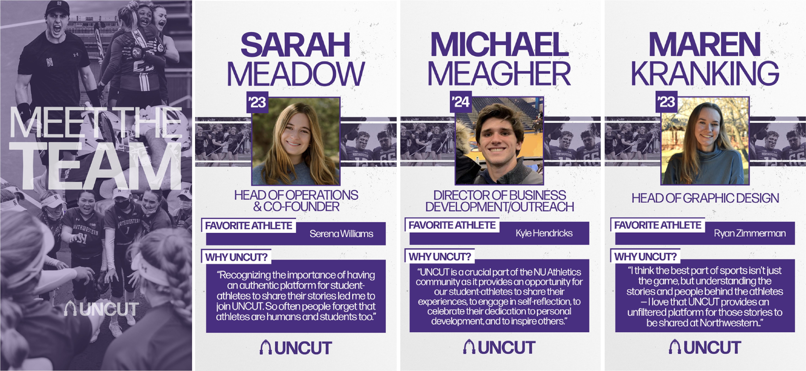
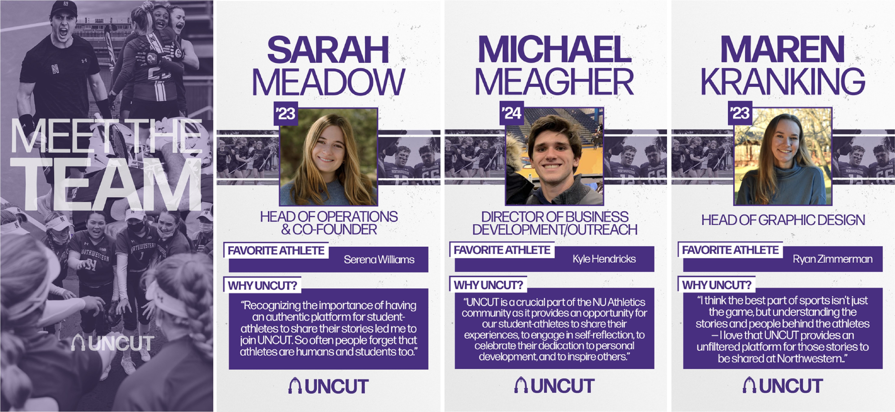

timeline: Spring 2021 - present
role: head of graphic design
publication: UNCUT Northwestern
skills: Adobe Photoshop, Adobe After Effects, social media design, motion graphics, web design
UNCUT is a media organization dedicated to amplifying the voices and stories of student-athletes.
The Northwestern branch of UNCUT was launched in Fall 2021, and in our first year we've published many stories told by Northwestern student-athletes and gained traction on social media.
I'm in charge of creating graphics for our social media posts — posts that reflect the individuality of each athlete's story while keeping to the UNCUT brand — as well as designing and maintaining our website. Visit our website and Instagram, and see some of my design work below.

 

×